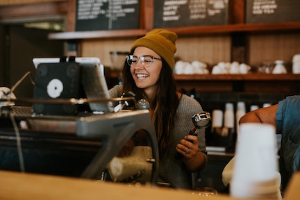

Patrick O’Neill became the founder of Busy Bean on November 16, 2019.
Here is the short story on how and why he created Busy Bean.
"Wandering around the streets of Lansing, Michigan is where I observed the lack of adult coffee shops.
Everywhere I went immature children were cluttering the majority of the mainstream coffee shops. Tables were full of
spills and discarded food with everlasting crumbs being wedged in-between the seats.
Any reasonable person that must put up with this nonsense has to be slipping a shot of whiskey into their coffee,
like any other reasonable person, I quietly made myself an Irish coffee in the back of the room.
While taking in slow small sips I looked around and begin to daydream on how civilized this place would be if booze was to be introduced.

Being lost in deep thought was when the idea of Busy Bean started coming to life.
Our first coffee shop will be located in Lansing, Michigan after months of researching the best locations
to bring Busy Bean to the public. Inside Busy Bean is where the staff are going to treat the customers as
civilized adults by not miss pronouncing a persons' name in a high pitch volume.
Our employees will take the order and deliver the product to the customer in peace.
A civil concept on ordering and delivering reduces the unnecessary stress that is currently being implemented in
so many other coffee shops. Assuring that everyone in the room is twenty-one or older makes the atmosphere exclusive.
Busy Bean offers outstanding customer service and lounging areas that have a view of the fireplace.
Sometimes humans do their best work with a shot of booze and hearing the fire crackle under soft mellow music.
Staying true to our set of high standards has allowed Busy Bean to expand into East Lansing.
Looking back I have to give my thanks to the great
Irish coffee drink for being responsible for giving birth to the Busy Bean Coffee Shop idea."